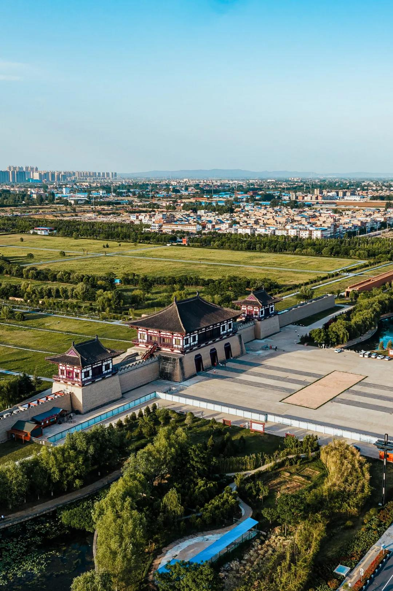
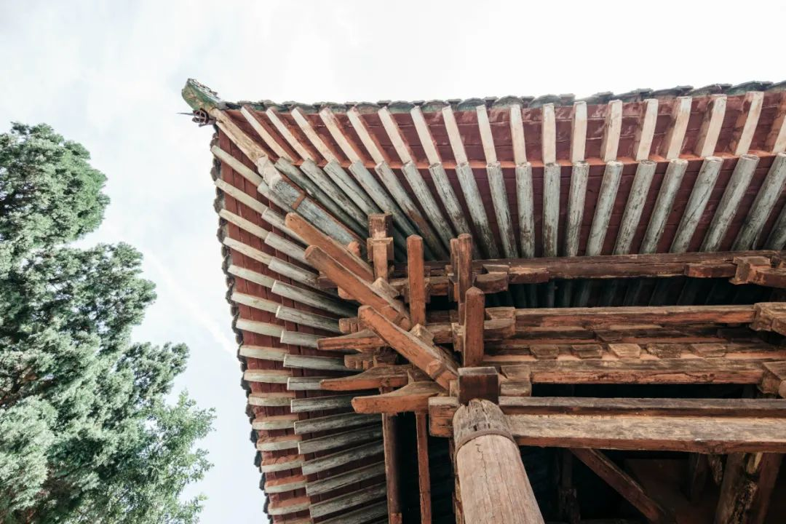
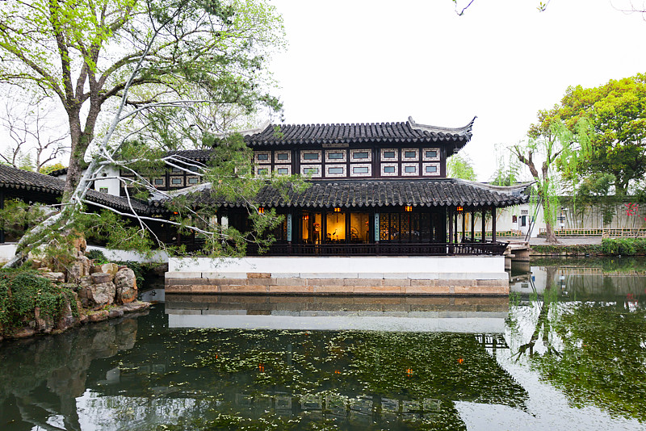

隋
宇文恺
主持规划大兴城和东都洛阳。大兴城的街道交错成网，把城里的居住区划成一块块里坊。


隋
主持规划大兴城和东都洛阳。大兴城的街道交错成网，把城里的居住区划成一块块里坊。
明
来自苏州吴县的香山匠师。永乐年间应召入京，参与营建北京宫殿，后来担任工部侍郎。

清
几代人都在做皇家建筑的设计，参与过圆明园、颐和园等工程。他们留下了大量图纸，也用缩小的模型展示建筑做法。
大兴城开始营建。
隋代开始营建东都洛阳。
喻皓主持修建的开宝寺木塔建成。
李诫重修的《营造法式》刊行。
计成的《园冶》刊行。
样式雷图档入选《世界记忆名录》。